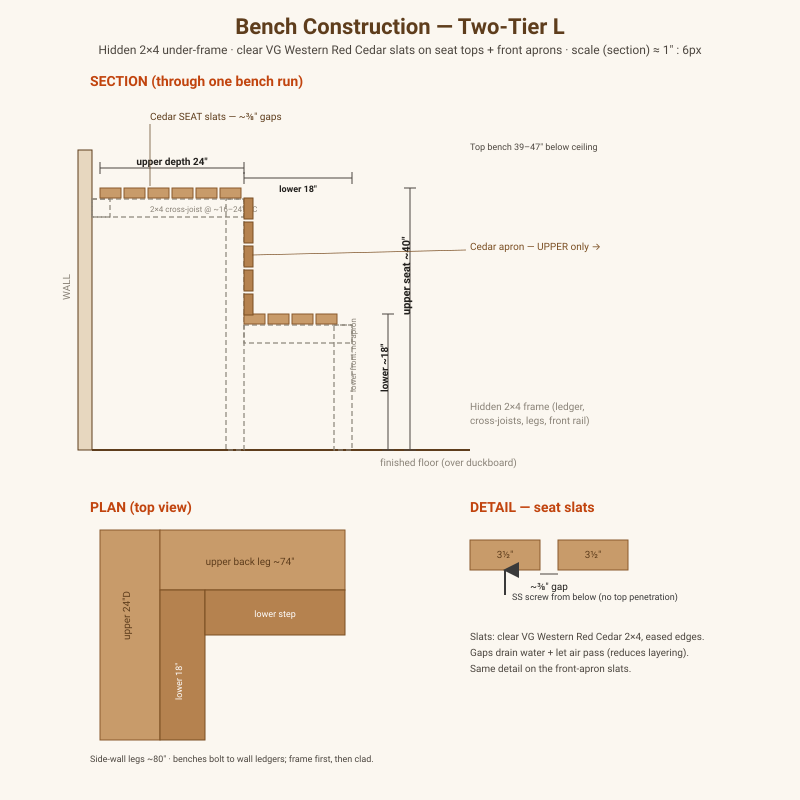

Overview
Bench ergonomics, flooring, door, and lighting — the details that make the sauna comfortable and safe to use.
Benches — L-shaped, two tiers, wrapping two walls
Both tiers are L-shaped, wrapping the same two adjacent walls: a high bench to sit/lie in the heat and a lower bench that doubles as the step up and a cooler seat.
Geometry (interior ~96″ back wall × 84″ side wall)
Each L is a full-length leg on the side wall plus a leg on the back wall (shortened by the side-leg’s depth so they meet cleanly at the corner). The back-wall legs are stretched to the wider ~96″ back wall (footprint widened to ~9 ft).
| Tier | Depth | Seat height | Side-wall leg | Back-wall leg |
|---|---|---|---|---|
| Upper | 24″ | ~40″ | 84″ | 72″ (96 − 24) |
| Lower | 18″ | ~18–20″ | 84″ | 78″ (96 − 18) |
- Seat surface: upper ≈ 26.0 ft², lower ≈ 20.25 ft² → ~46 ft² total.
- Combined projection from the walls ≈ 24″ + 18″ = 42″; the lower bench’s front end aligns to the door frame edge on the front wall (see door note below).
- The heater takes the front-right corner; the door sits between the lower bench and
the heater (see
dimensions-and-layout.htmland the floor plan).
Construction drawings

How it’s built (each tier)
Hidden 2×4 under-frame, clad with clear VG cedar slats on the seat top and the front apron. No fasteners through the seating surface.
- Wall ledger — a 2×4 lagged into the wall studs at seat height, running both legs.
- Front rail — a 2×4 at the front edge, carried by vertical legs every ~24″.
- Cross-joists — 2×4s front-to-back, ledger → front rail, every ~16–24″, forming the seat frame. Mitre or lap the frame at the inside corner of the L.
- Top slats — cedar boards across the frame with a ~⅜–½″ gap between each for drainage and airflow. Fasten from below (or hidden clips) — no hot screw heads.
- Front apron slats — UPPER bench only — cedar boards clad the exposed upper riser (lower-seat → upper-seat). The lower bench front is left open (no apron) per owner. Add nailers to the upper frame to receive the apron slats.
Decision: hem-fir 2×4 under-frame (hidden; matches the interior species, economical, stable — not pressure-treated, no cedar wasted here); clear VG Western Red Cedar slats on both seat tops + the UPPER bench front apron only (lower front open). Fasten from behind/below with stainless screws; keep visible faces fastener-free. Ease all edges. Keep frame feet up off standing water.
Wood takeoff (bench only)
Assumes 2×4 (actual 3.5″ face) slats at ~4″ pitch (board + gap), 8-ft stock. Front-apron lengths are estimated pending final layout.
| Component | Material | Net length | With ~12% waste | 8-ft boards |
|---|---|---|---|---|
| Top (seat) slats (upper 6 rows, lower 5 rows, both legs) | Clear VG WRC 2×4 | ~146 lf | ~163 lf | ~21 |
| Front-apron slats (upper riser only ~22″, room-facing run) | Clear VG WRC 2×4 | ~48 lf | ~54 lf | ~6 |
| Cedar slat subtotal | Clear VG WRC 2×4 | ~194 lf | ~217 lf | ~27 |
| Wall ledgers (both tiers) | 2×4 hem-fir | ~27 lf | ~30 lf | ~4 |
| Front rails + upper apron nailers | 2×4 hem-fir | ~36 lf | ~40 lf | ~5 |
| Legs / posts (~8 upper, ~8 lower) | 2×4 hem-fir | ~37 lf | ~41 lf | ~6 |
| Cross-joists (@ ~16–24″ OC) | 2×4 hem-fir | ~28 lf | ~31 lf | ~4 |
| Framing subtotal | 2×4 hem-fir | ~128 lf | ~142 lf | ~18 |
- Buy ~27 × clear VG Western Red Cedar 2×4×8 for the seat tops + the upper front
apron — the wood people see/touch, so clear vertical-grain (no knots/sap) matters most.
PNW pricing ~$30–48/board (see
../01-research/cedar-pricing.md). - Buy ~18 × hem-fir 2×4×8 for the hidden frame + upper-apron nailers (SPF ok if cheaper).
- Plus: stainless screws, ledger lag screws + anchors, construction adhesive.
Note: The slat count comes from depth ÷ ~4″ pitch (upper 24″ → 6 rows, lower 18″ → ~5 rows) times each leg length. Adjust the gap slightly to make rows land evenly on the actual bench depths.
Floor
- Concrete slab (see
foundation.md), pitched to a floor drain, sealed or tiled. - Removable duckboard on top for comfort and to keep feet off the wet slab.
Door & windows
- Door: DIY-built — ~22″ leaf, outswing (safety), no lockable latch, with a large glass window/lite (enlarged per owner — a tall lite in most of the leaf for light and view). Allow ~3″ of frame each side → ~28″ rough opening. Build from hemlock T&G (matches the walls) on a simple frame, tempered-glass lite, stainless hinges, wood handle, and a heat-safe gasket. Materials ~$180–420 (bigger glass).
- Position: on the front wall, between the lower bench and the heater. The lower-bench front edge aligns to the near edge of the door frame — no dead gap.
- Heater clearance: the door frame is combustible wood; keep the heater’s required clearance to it (~6″ is planned — verify against the heater manual).
- No rear window — removed per owner. Fewer glazed openings = less heat loss (a bit more margin for the 9.5 kW heater) and one less thing to seal/flash.
- The door lite is the only glazing now; keep it clear of the heater’s hottest zone.
- Rough opening feeds
framing.html.
Lighting
- Heat- and moisture-rated fixture, placed out of direct splash and away from the heater’s hottest zone; often low or behind a shield for soft light.
Open items
- [ ] Bench dimensions from occupancy target.
- [ ] Door type (glass vs. wood).
- [ ] Light fixture selection (heat/moisture rated).